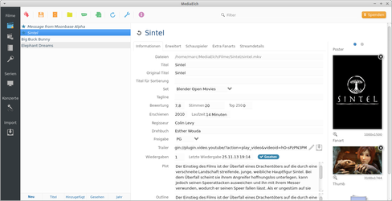
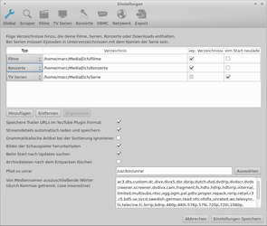
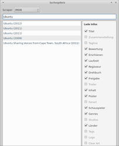

MediaElch
Dieser Artikel wurde für die folgenden Ubuntu-Versionen getestet:
Ubuntu 16.04 Xenial Xerus
Ubuntu 14.04 Trusty Tahr
Zum Verständnis dieses Artikels sind folgende Seiten hilfreich:
MediaElch 
 ist ein MediaManager für Kodi (ehem. XBox Media Center). Es können, zur Verwendung mit diesem, Informationen zu Spielfilmen, Serien und Konzerten aus dem Internet bearbeitet, verwaltet, ergänzt, heruntergeladen und in den .nfo-Dateien oder der Datenbank gespeichert werden. Es ist möglich Trailer mit dem integrierten Programmteil herunterzuladen und Bilder von fanart.tv einzubinden.
ist ein MediaManager für Kodi (ehem. XBox Media Center). Es können, zur Verwendung mit diesem, Informationen zu Spielfilmen, Serien und Konzerten aus dem Internet bearbeitet, verwaltet, ergänzt, heruntergeladen und in den .nfo-Dateien oder der Datenbank gespeichert werden. Es ist möglich Trailer mit dem integrierten Programmteil herunterzuladen und Bilder von fanart.tv einzubinden.
Das Programm unterstützt unter anderem die Formate .mkv, .mpg, .avi, .vob und .m2ts. Durch die fortschreitende Entwicklung kommen regelmäßig neue Funktionen hinzu.
|  |
| Filme |
Installation¶
Die Software kann über verschiedene Wege installiert werden.
Quellcode¶
Alternativ kann das Programm kompiliert werden. Hierzu sind die folgenden Pakete notwendig [2]:
libqt4-dev
qt4-qmake
libqt4-sql
libqt4-sql-sqlite
libqt4-script
libqt4-xml
libqt4-core
libqt4-gui
libqt4-network
libmysqlclient18
libmediainfo-dev
libzen-dev
libphonon-dev
libphonon4
libquazip0 (universe, Ab Raring verfügbar)
libquazip0-dev (universe, Ab Raring verfügbar)
 mit apturl
mit apturl
Paketliste zum Kopieren:
sudo apt-get install libqt4-dev qt4-qmake libqt4-sql libqt4-sql-sqlite libqt4-script libqt4-xml libqt4-core libqt4-gui libqt4-network libmysqlclient18 libmediainfo-dev libzen-dev libphonon-dev libphonon4 libquazip0 libquazip0-dev
sudo aptitude install libqt4-dev qt4-qmake libqt4-sql libqt4-sql-sqlite libqt4-script libqt4-xml libqt4-core libqt4-gui libqt4-network libmysqlclient18 libmediainfo-dev libzen-dev libphonon-dev libphonon4 libquazip0 libquazip0-dev
Zum Kompilieren [3] die benötigten Dateien herunterladen und den Prozess einleiten [4]:
git clone https://github.com/Komet/MediaElch.git cd MediaElch qmake && make
PPA¶
Die aktuelle stabile Version erhält man aus den "Personal Package Archiv" (PPA) [2] der Entwickler.
Adresszeile zum Hinzufügen des PPAs:
ppa:kvibes/mediaelch
Hinweis!
Zusätzliche Fremdquellen können das System gefährden.
Ein PPA unterstützt nicht zwangsläufig alle Ubuntu-Versionen. Weitere Informationen sind der  PPA-Beschreibung des Eigentümers/Teams kvibes zu entnehmen.
PPA-Beschreibung des Eigentümers/Teams kvibes zu entnehmen.
Damit Pakete aus dem PPA genutzt werden können, müssen die Paketquellen neu eingelesen werden.
Nach der Aktualisierung der Paketquellen erfolgt die Installation [2]:
mediaelch
mit apturl
Paketliste zum Kopieren:
sudo apt-get install mediaelch
sudo aptitude install mediaelch
Hinweis:
Für Ubuntu 12.04 gibt es keine neuere Version als 1.6 im PPA, da in den offiziellen Repositories libquazip fehlt.
Das Programm kann über das  Startmenü unter "Sonstiges -> MediaElch" bzw. "Multimedia -> MediaElch" aufgerufen werden.
Startmenü unter "Sonstiges -> MediaElch" bzw. "Multimedia -> MediaElch" aufgerufen werden.
|  |
| Einstellungen |
Konfiguration¶
Bevor mit dem Programm gearbeitet werden kann, müssen ein paar Grundeinstellungen vorgenommen werden. Diese erreicht man über den Menüpunkt "Einstellungen". Der Aufbau variiert - je nach verwendeter Programmversion - minimal. So sind einzelne Funktionen nicht überall verfügbar.
| Menü | |
| Menüpunkt | Beschreibung |
| "Global" | Speicherpfad(e) der zu verarbeitenden Videodateien. Darauf achten, dass für Filme, Konzerte und Serien unterschiedliche Einstellungen nötig sind. Angabe des Pfades zu unrar, Sortierung, Fotos dder Schauspieler herunterladen... |
| "Scraper" | Spracheinstellungen, in denen die heruntergeladenen Informationen vorliegen sollen. Die zu verarbeitenden Daten können zu einem individuellen Scraper kombiniert werden. Hinterlegung der Zugangsdaten für Media-Passion und Aktivierung von Erotik-Scrapern. |
| "Filme" | Liste der Dateinamen, welche zum Laden und Speichern der Filme, Serien und Konzerte verwendet werden. |
| "TV Serien" | |
| "Konzerte" | |
| "XBMC" | Host, Port, Benutzername und Passwort eintragen, um XBMC über diesen Weg zu synchronisieren. |
| "Netzwerk" | Konfiguration, sofern ein Proxy verwendet werden soll. |
| "MediaCenter" | MySQL, XML oder SQLite. |
| "Export" | Festlegung, welches Theme zum Export der Datenbank verwendet wird. |
Hinweis:
Ab Version 1.4 können über die Schaltflächen "XBMC Eden" bzw. "XBMC Frodo" die Dateinamen entsprechend angepasst werden.
|  |
| Suche |
Bedienung¶
Suche¶
Nachdem die Verzeichnisse durchsucht wurden, sind die Filme im Programmfenster auf der linken Seite ersichtlich. Nach Auswahl eines Films kann man über die Schaltfläche "Suche" bzw. "Informationen laden" nach den gewünschten Filminformationen suchen. Sofern mehrere Einträge vorhanden sind, werden diese in einer Liste angezeigt. Es stehen mehrere Scraper zur Verfügung und können einzeln angewählt werden. Nach der Wahl des passenden Eintrags werden die Informationen aus dem Internet heruntergeladen.
Neben diesen Daten stehen zusätzliche Informationen unter den Reitern "Erweitert" (Schauspieler, Genre...), "Streamdetails" (Codec, Sprache...) und durch die Bilder (Seitenverhältnis, Videocodec...) zur Verfügung.
Für die Indizierung der Videosammlung ist es hilfreich, wenn das Schema (Filme / Serien ) zur Benennung der Dateien angewendet wurde.
Es empfiehlt sich z.B. folgende Grundstruktur zu verwenden:
Videos
Filme
Der Film (2013)
Der Film (2013).Dateiendung
Serien
Die Serie (2013)
Die Serie - s01e01 - Titel.Dateiendung
Die Serie - s01e02 - Titel.Dateiendung
Konzerte
Das Konzert (2013)
Das Konzert (2013).Dateiendung
Scraper¶
Folgende Scraper werden verwendet:
Media-Passion
(Zugang notwendig)Adult Entertainment Broadcast Network
(Aktivierung in den Einstellungen nötig)HotMovies - Video On Demand
(Aktivierung in den Einstellungen nötig)
Hinweis:
Sofern ein Film nicht zu finden ist, besteht die Möglichkeit nach einem Alternativtitel zu suchen oder selber die benötigten Informationen zu hinterlegen.
Bildmaterial¶
Sofern der Scraper Bildmaterial (Poster, Fanart, Logo...) gefunden hat, wird dieses angezeigt. Über einen  Linksklick auf dieses Material öffnet sich ein weiteren Dialog. Hier können Alternativdateien ausgewählt werden. Lokal gespeichertes Material kann man über "Lokales Bild auswählen" ergänzenn. Bei Anzeige der Schaltflächen bzw. wurde kein entsprechendes Material gefunden kann aber über diese hinzugefügt werden.
Linksklick auf dieses Material öffnet sich ein weiteren Dialog. Hier können Alternativdateien ausgewählt werden. Lokal gespeichertes Material kann man über "Lokales Bild auswählen" ergänzenn. Bei Anzeige der Schaltflächen bzw. wurde kein entsprechendes Material gefunden kann aber über diese hinzugefügt werden.
Hinweis:
Bildmaterial sollte nach diesen Vorgaben vorliegen - kann ab Version 1.4 aber auch automatisch umbenannt werden.
Sortierung¶
| Menü | |
| Menüpunkt | Beschreibung |
| "Filme" | Sortierung der Filmbibliothek. |
| "Zusammenstellungen" | Auflistung nach Tags, welche unter "Filme" als Set festgelegt wurden. Hier können Poster und Fanart hinzugefügt werden. |
| "Genres" | Verwaltung der Genres. |
| "Altersfreigaben" | Auflistung aller Titel nach den hinterlegten Freigaben. |
| "TV Serien" | Nachbearbeitung der Serien. Bei der Suche werden automatisch Informationen für alle neuen Episoden heruntergeladen. Über "Alle Episoden aktualisieren" werden die Infos aller Episoden überschrieben. |
| "Konzerte" | Aufbereitung der Konzerte. |
Erweiterte Einstellungen¶
Seit Version 1.5 können erweiterte Einstellung in der Datei advancedsettings.xml, welche im Homeverzeichnis unter ~/.local/share/data/kvibes/MediaElch anzulegen ist, vorgenommen werden [5].
| Erweiterte Einstellungen | |
| Syntax | Beschreibung |
<debug>false</debug> | false auf true ändern, um den Debug-Modus zu aktivieren. Der komplette Pfad zu einer Logdatei muss angegeben werden. |
<token>Der</token> | Um die Artikel bei der Sortierung ohne Artikel zu ändern, können beliebig viele token Elemente hinzugefügt oder entfernt werden. |
<useFirstStudioOnly>false</useFirstStudioOnly> | Bei der Verwendung von true wird nur das erste Studio in die .nfo-Datei geschrieben. |
<certifications> / <gernes> / <studios> / <countries> | Inhalt der Felder, welche über einen Scraper bezogen wurden, anpassen. So ersetzt z.B. die Zeile <map from="PG-13" to="FSK 12" /> die Altersfreigabe PG-13 durch den Eintrag FSK 12. |
audioCodecs / videoCodecs | Ersetzung von Stream-Details. |
fileFilters | Dateierweiterungen definieren - bei der Verwendung von mehreren Erweiterungen werden Kommata zur Trennung verwendet (z.B. <movies>*.avi,*.mkv</movies>). |
advancedsettings.xml¶
Die Basisdatei sieht wie folgt aus:
<advancedsettings>
<log>
<debug>false</debug>
<file></file>
</log>
<sorttokens>
<token>Der</token>
<token>Die</token>
</sorttokens>
<certifications>
<map from="PG-13" to="FSK 12" />
</certifications>
<genres>
<map from="SciFi" to="Science Fiction" />
</genres>
<studios>
<useFirstStudioOnly>false</useFirstStudioOnly>
<map from="Studio 1" to="Studio 2" />
</studios>
<countries>
<map from="US" to="United States" />
</countries>
<audioCodecs>
<map from="MPA1L3" to="MP3" />
</audioCodecs>
<videoCodecs>
<map from="v_mpeg4/iso/avc" to="h264" />
</videoCodecs>
<fileFilters>
<movies>*.avi,*.mkv</movies>
<concerts>*.avi,*.mkv</concerts>
<tvShows>*.avi,*.mkv</tvShows>
</fileFilters>
</advancedsettings>Tastenkürzel¶
| Tastenkürzel | |
| Taste(n) | Funktion |
| Strg + F | Informationen laden/Suche |
| Strg + S | Speichern |
| Strg + ⇧ + S | Alles speichern. |
| Strg + R | Filme neu laden. |
- Erstellt mit Inyoka
-
 2004 – 2017 ubuntuusers.de • Einige Rechte vorbehalten
2004 – 2017 ubuntuusers.de • Einige Rechte vorbehalten
Lizenz • Kontakt • Datenschutz • Impressum • Serverstatus -
Serverhousing gespendet von